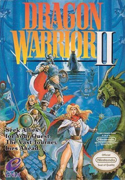

Dragon Quest II started development before the first had even released. Who knows why, I like to think it's because they knew they had a hit on their hands. Just like the first game all of the art was painted by Akira Toriyama. Like the first, it was a huge hit in Japan. Not so much in the United States.
Obviously, the weakest point of Dragon Quest I was that the combat was kind of basic and boring. So they took inspiration from Wizardry, and added a team based battle system. This made the game far more playable and legitimately fun. Apparantly there was a big delay in development because the game was considered too hard. They had time to balance the first portion of the game afterwards, but never got to balancing the latter portion. This is a critique a lot of players have with the game, saying it's too difficult. But I never noticed, I always thought it was a great difficulty. There's nothing a little bit of extra grinding can't solve. The game also added the ship, so you can sail to different conintents. A series staple to this day.
A lot like the first game, I haven't played this game in 7 or 8 years, so the story is loose in my head. But you play as a prince and you meet your friends, another prince and princess of neighboring kingdoms. These two help you out on your quest, and become your sole party members. I remember the other prince was an unlucky guy, bad stuff always happened to him. You go out and destroy a demon lord a lot like the first game. The main antagonist of the game is Hargon. The final boss is Malroth, who both appear in Dragon Quest Builders II.
Dragon Warrior II hit me at exactly the right moment. I played it at Hattisburg Highschool in my Sophomore year. I had no friends there, and the principal was a racist, he picked on me and my brother because we are white. So I had Dragon Warrior II and Persona 3 to keep me away from the world during the day. I played Dragon Warrior II on my switch lite, and I just adored how much the game made me feel like I truly was going on quest to save the world. The day I beat that game was the last time I ever went back to that school. It was like I earned my escape from that life. Of course I'm gonna be biased towards it after that.